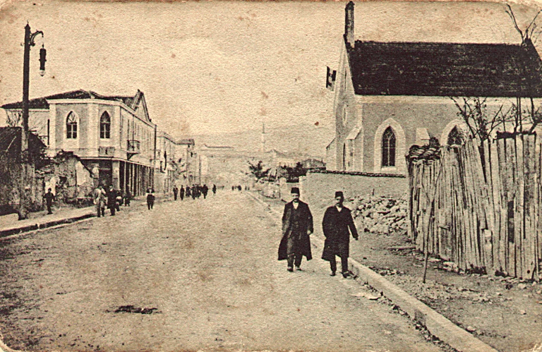
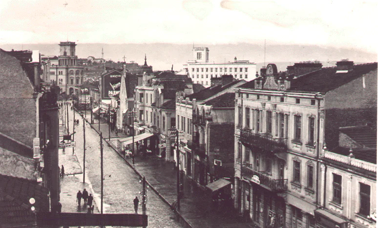
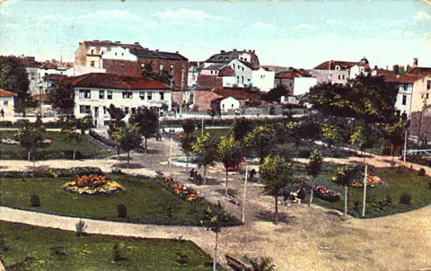

Зеленчуков пазар
- Продукция
- УФУЖ и Документален филм Прага
- Сценарий и режисура
- Славко Яневски и EMAN CANERA
- Година
- 1959
- Времетраене
- 00:18

Скопски християнски къщи - 1870 година.

Част от старата скопска чаршия, 1902 година. Редица дюкяни с кепенци пред Куршумли хан. На заден план се вижда кулата на Гюлшен хамам.

Главната улица при своето оформяне (днес улица „Македония“, която се простира от днешния Музей на град Скопие към Каменния мост). Вдясно се вижда Католическата църква в готически стил, както и отделни сгради вляво. Частта при Каменния мост е павирана през 1911 година, за да мине султан Мурад V, който дошъл да посети Скопие преди заминаването си за Косово поле.

Снимката е направена от сградата на старата гара - днешния Музей на град Скопие, построена през 1873 година по време на Османската империя. На преден план е подходът към гарата с оградени зелени площи. Нататък продължава главната улица към площада. В началото на улицата вляво е хотел „Русия“.

Изглед към главната улица „Македония“. Арката е издигната в чест на някакъв важен гост. Вляво от нея е хотел „Русия“. - началото на 20 век.

Главната улица с хотел „Москва“ - 1920-те

Главната улица, днешна Македония, водеща от днешния Музей на град Скопие към площада. В края на улицата се вижда Офицерският дом, а вдясно от него Стопанско-търговската камара - 1930-те.

Главната улица, снимана към днешния Музей на град Скопие - около 1920 година.

Главната улица (днешната Македония), от площада към гарата - около 1920 година.

Главната улица, Македония, от днешния Музей на град Скопие към площада. Вляво е хотел Бристол, а вдясно се вижда дворецът Кранг. (1930-те)

Главната улица, водеща от днешния Музей на град Скопие към площада. Снимано при днешния хотел „Бристол“ и двореца Кранг. На заден план се вижда Офицерският дом - около 1935 година.

Главната улица, водеща от днешния Музей на град Скопие към площада. Сградата на ъгъла е дворецът Кранг - 1930-те.

Дворецът Кранг. - 1930-те.

Улицата край кея на десния бряг на р. Вардар. - 1930-те

Улица в старата част на града към старата чаршия - края на 19 век.

Улицата от Каменния мост към старата чаршия. - 1920-те

Улица в старата част на града, към махала Чаир. На преден план са стоянка за файтони и старата турска чешма. На заден план са сгради със стара народна архитектура - 1920-те.

Каменният мост към старата чаршия. Вляво редица търговски дюкяни, а вдясно сградата на зъболекаря д-р Рубен и редица дюкяни към старата чаршия - около 1935 година.

Улица „Крушевска“ в Пайко махала, 1920-те.

Тази улица днес не съществува. Простирала се успоредно на главната улица, от площада към старата гара (днешния Музей на град Скопие) - 1920-те

Главната улица (днешната „Македония“) - 1920-те.

Улица от старата чаршия в Скопие. На заден план Мустафа паша джамия. - 1930-те

Улица в старата чаршия на Скопие. На заден план се вижда Мустафа паша джамия. - 1930-те

Улица „Цветан Димов“ в квартал Чаир, 1940-те. На заден план се вижда Мехмед паша джамия.

Скопие, 1950-те. Входът на старата скопска чаршия - мястото на универсалния магазин „Мост“. На преден план е група дюкяни, съборени след земетресението през 1963 година. Вляво се вижда част от скопската крепост - Кале. На заден план е Мустафа паша джамия.

Малкият площад в старата скопска чаршия, 1950-те.

Улица 11 октомври, снимана от площада към днешното Събрание на Р. Македония. На заден план се вижда старата сграда на Управлението на вътрешните работи. - 1950-те

Улица 11 октомври със Събранието на Р. Македония вляво. Вляво се вижда и средновековната кула. В задната част на снимката се вижда част от сградата на старата поща. - края на 1950-те

Улица „Гоце Делчев“, снимана от площада. На преден план вляво се вижда част от хотел „Македония“, който се срутва при земетресението през 1963 година. - 1950-те

Главната улица към площада. На преден план е Католическата църква. - 1950-те

Главната улица в посока към гарата (днешният Музей на град Скопие). Вляво се вижда Католическата църква. - 1950-те

Главната улица „Македония“ към площада. - 1950-те

Скопие, 1950 година. Западната част на главната улица. Вляво е хотел „Москва“.

На преден план е кръстовището на улица 11 октомври и булевард Кочо Рацин. Вдясно от кулата, която е в строеж, се вижда старата военна фурна от Първата световна война - 1950-те

Кръстовището на булевард Кочо Рацин и улица 11 октомври. - 1950-те

Улицата край Градската болница и Работническия университет - 1950-те

Улица 11 октомври - края на 1970-те, към площад „Македония“.

Изглед от улица 11 октомври към площад „Македония“. Вляво са жилищни сгради, а вдясно сградата на Електростопанство. - края на 1970-те

 Акведукт4 картички
Акведукт4 картички Кале30 картички
Кале30 картички Мостове60 картички
Мостове60 картички Кей58 картички
Кей58 картички Площад46 картички
Площад46 картички Сгради66 картички
Сгради66 картички Християнски храмове19 картички
Християнски храмове19 картички Мюсюлмански сгради33 картички
Мюсюлмански сгради33 картички Офицерски дом29 картички
Офицерски дом29 картички Театър28 картички
Театър28 картички Железопътна гара13 картички
Железопътна гара13 картички Училища36 картички
Училища36 картички
Паркове12 картички Пазари18 картички
Пазари18 картички Улици38 картички
Улици38 картички Панорама I60 картички
Панорама I60 картички Панорама II30 картички
Панорама II30 картички Колажи55 картички
Колажи55 картички Наводнения9 картички
Наводнения9 картички Земетресение27 картички
Земетресение27 картички Скопие 200026 картички
Скопие 200026 картички